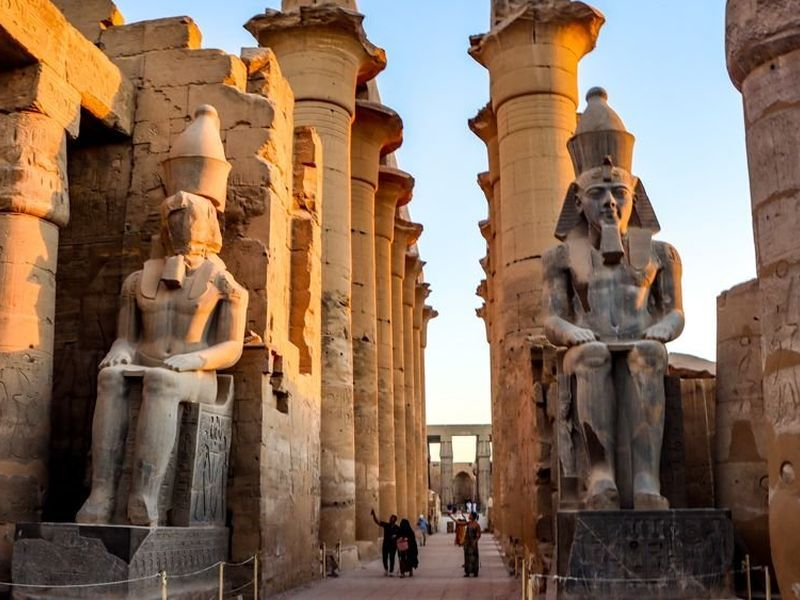
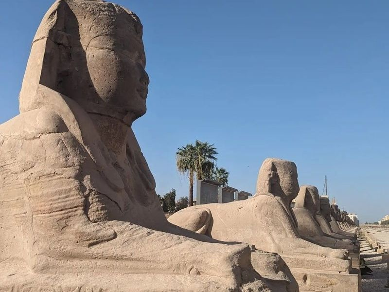
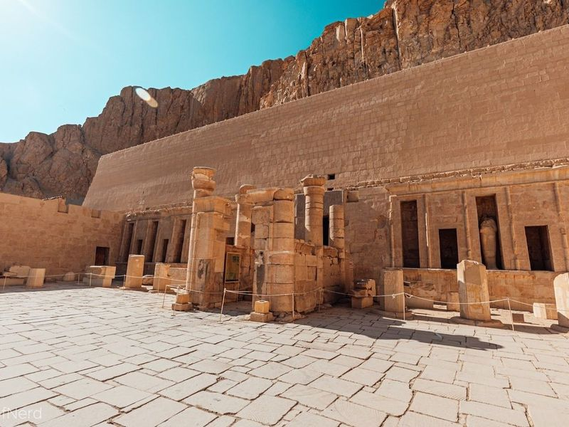
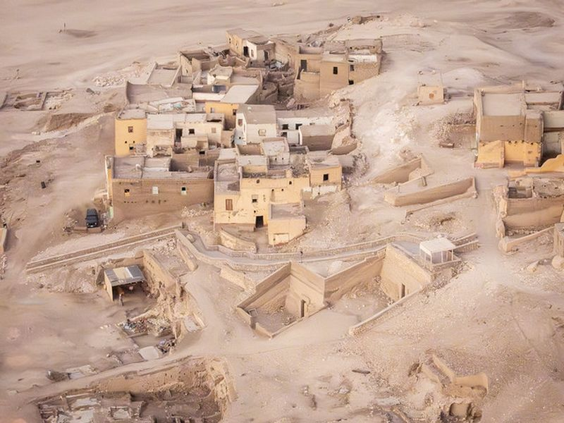
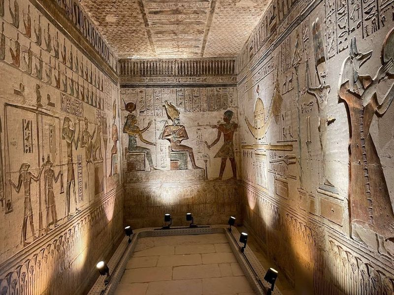
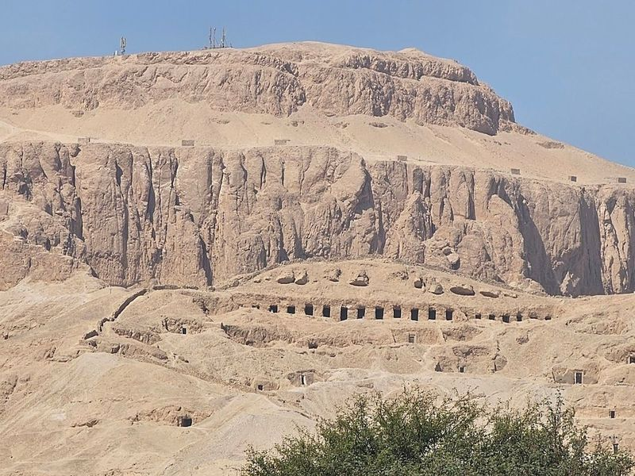
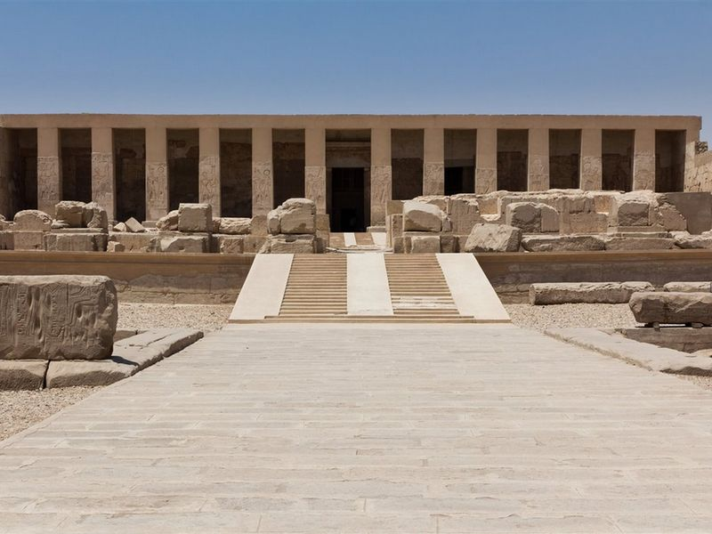
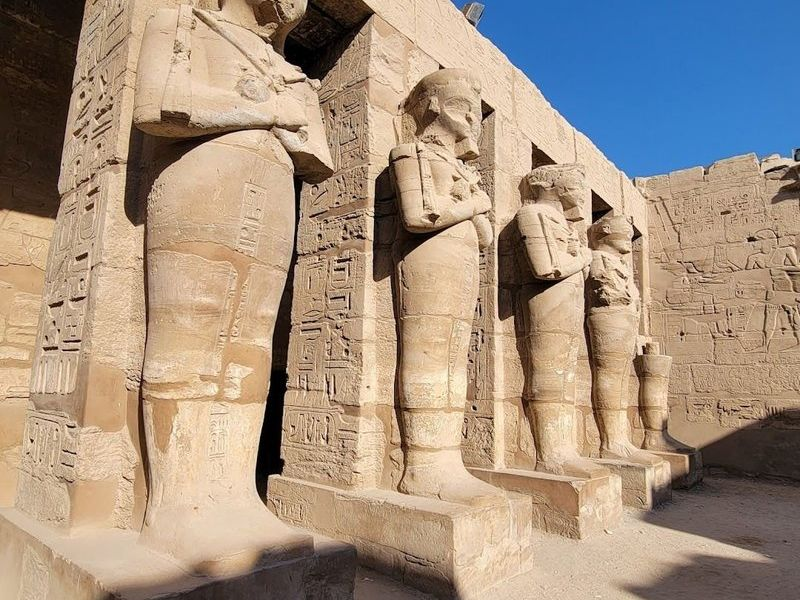
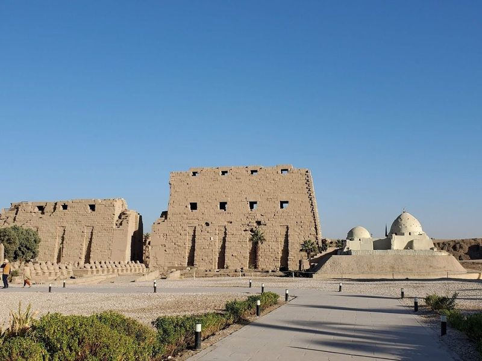
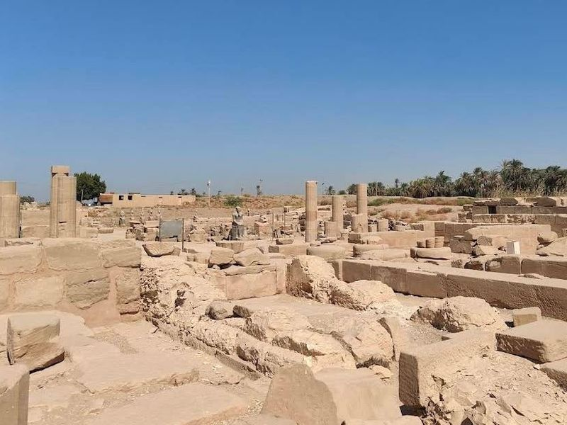

Explore Luxor
A Brief History
Luxor occupies ancient Thebes, capital of Egypt's New Kingdom from the sixteenth to eleventh centuries BCE. Pharaohs raised temples at Karnak and Luxor, royal tombs in the Valley of the Kings, and mortuary shrines on the west bank. The Avenue of Sphinxes and surviving colossi record how Theban priests and kings projected divine authority along the Nile.
Attractions Map
Top Sights & Activities

Luxor Temple
Luxor Temple is a magnificent complex that was primarily built under the reigns of Amenhotep III and Ramesses II, with contributions from Tutankhamun and others. Situated on the West Bank of Luxor, it is part of a collection of historical attractions that offer insight into Egypt's rich history.

Avenue of Sphinxes
The Windsor Hotel, In Luxor city, is a convenient accommodation option for travelers. Situated just 40 meters from Sphinx Avenue, it offers easy access to attractions such as Luxor Temple and Karnak Temple. The hotel features modern rooms with balconies offering views of the outdoor swimming pools. Additionally, guests can enjoy a complimentary breakfast during their stay.

Mortuary Temple of Hatshepsut
The Mortuary Temple of Hatshepsut, also known as the 'Valley of the Gates of the Kings,' is an reconstructed temple located beneath the cliffs at Deir el-Bahari in Egypt. This site was used for 500 years between the 16th and 11th centuries BC to build tombs for pharaohs and nobles.

Valley of the Kings
Valley of the Kings is listed among principal sites for Luxor within Egypt. Municipal and regional heritage listings document its place in the historic centre and travellers routes through Luxor. Valley of the Kings is listed among principal sites for Luxor within Egypt.

Deir el-Medina
Deir el-Medina is an ancient village established around 1492 BCE, where workers who built royal tombs and a Ptolemaic temple resided. It's a well-preserved gem that offers insight into the daily lives of ordinary Egyptians. The narrow streets and simple dwellings stand in contrast to the lavish tombs they helped create in the nearby Valley of the Kings.

Colossi of Memnon
The Colossi of Memnon, a pair of massive Egyptian statues, are the only remnants of the ancient temple dedicated to King Amenhotep III. These colossal figures were built around 1350 BC and stand as a testament to the power and grandeur of the 18th dynasty in ancient Egypt.

Mortuary Temple of Seti I
The Mortuary Temple of Seti I is an ancient temple built for a pharaoh, featuring intricate columns and stone carvings. The highlight of the temple is the display of two royal mummies, including Ahmose and possibly Ramses, showcased without their wrappings in dark rooms. The displays also illustrate Thebes' military might during the New Kingdom, showcasing chariots and weapons. Additionally, there are scenes depicting daily life and technology used during that era on the upper floor.

Karnak
Karnak is a massive temple complex in Luxor, Egypt, featuring well-preserved ancient ruins and over 200 structures, including the imposing Amen-Ra temple. The site offers private tours with pick-up services from hotels in Luxor, guided by knowledgeable Egyptologists. Visitors can explore the Valley of the Kings, Hatshepsut Temple, and Colossi of Memnon on this approximately 5-hour excursion.

Precinct of Amun-Re
The Precinct of Amun-Re is an impressive archaeological site that features a massive temple dedicated to the god Amun-Re, making it the largest among the four Karnak Temples. This precinct is part of a larger complex that also includes the Precinct of Mut, Precinct of Montu, and the dismantled Temple of Amenhotep IV. Throughout history, approximately thirty pharaohs contributed to the construction of this complex, resulting in its incredible size and diverse architectural styles.

Mut Temple
Mut Temple is a restored temple complex dedicated to Mut, an Egyptian sky goddess and the consort of Amun-Ra. Located in Luxor, it reflects the city's deep religious significance as the city of Amun during ancient times. The Karnak temple served as the official place for worship, housing shrines for various gods including Amun-Re and Mut. The area surrounding the Karnak Complex was revered by ancient Egyptians as 'Ipet-isu,' or the most selected of places.